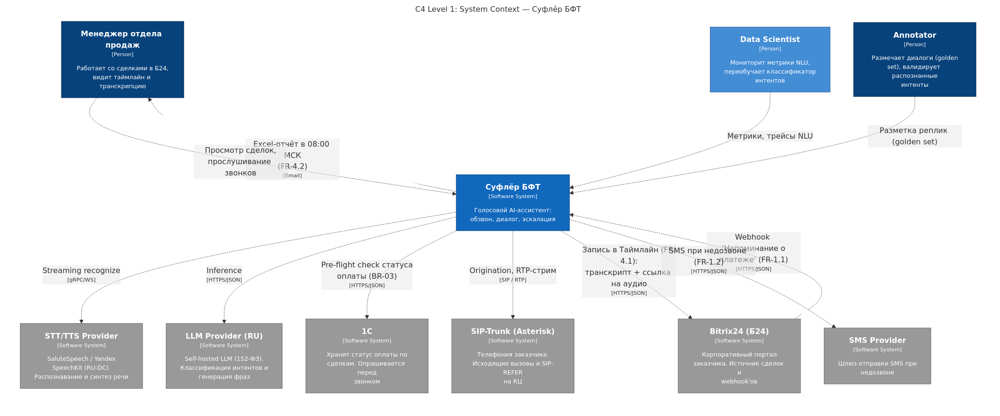
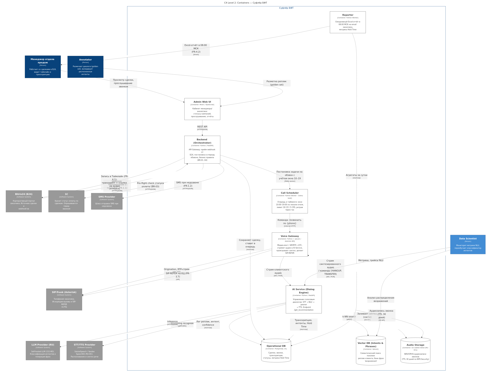
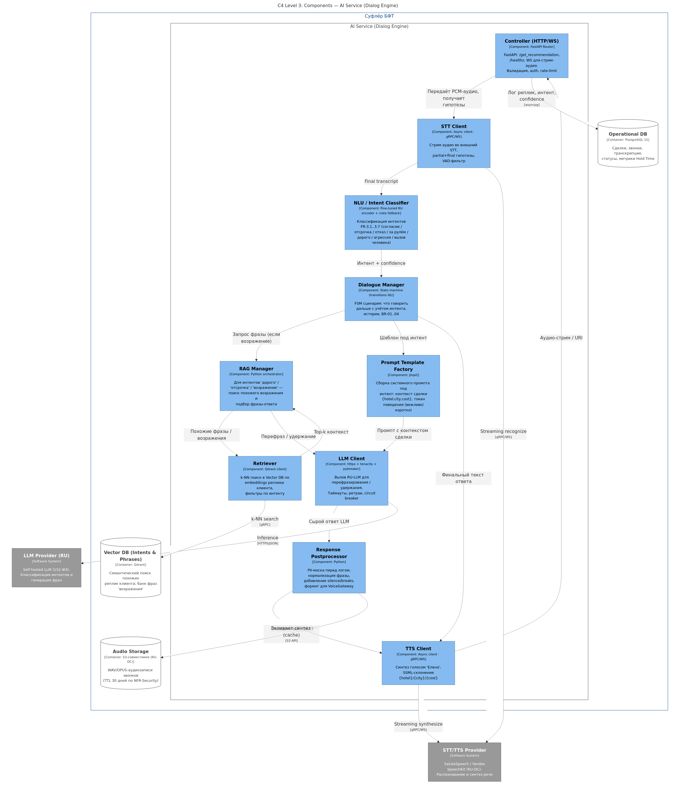
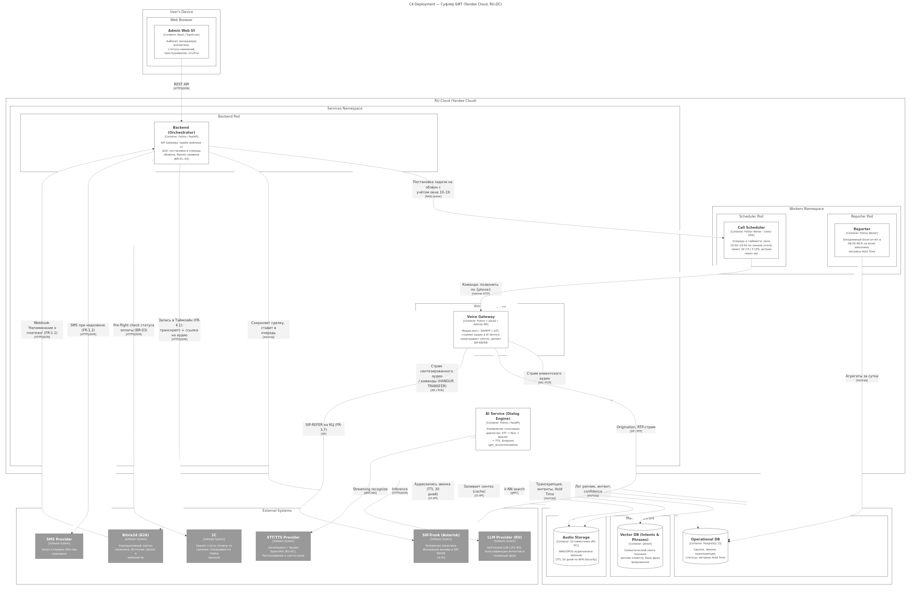

C4-диаграммы и OpenAPI к ДЗ-05 курса OTUS «AI-Архитектор»
Триггер из Б24 (webhook «Напоминание о платеже») → проверка статуса оплаты в 1С → исходящий звонок через SIP-Trunk (Asterisk) → клиент. Эскалация на оператора КЦ через SIP-REFER. Внешние AI-сервисы: STT/TTS-провайдер (SaluteSpeech/YC SpeechKit), self-hosted RU-LLM. SMS-провайдер для fallback при недозвоне (FR-1.2).

9 контейнеров: Admin UI (Frontend), Backend Orchestrator, AI Service (Dialog Engine), Voice Gateway (медиа-мост SIP/RTP ↔ внутреннее аудио), Call Scheduler (окно 10:00–19:00, 30 СЛ / 5 CPS), Reporter (ежедневный Excel в 08:00 МСК), SQL DB (PostgreSQL — сделки/звонки/транскрипции), Vector DB (Qdrant — банк фраз/возражений), Audio Storage (S3, TTL 30 дней по 152-ФЗ).

10 компонентов: Controller (HTTP/WS, эндпоинт /get_recommendation), STT Client, NLU Intent Classifier (классификация FR-3.1…3.7), Dialogue Manager (FSM с BR-01…04), RAG Manager + Retriever (поиск похожих возражений в Qdrant — путь для FR-3.5 «дорого»), Prompt Template Factory, LLM Client (с tenacity + pybreaker), TTS Client (голос «Елена»), Response Postprocessor (PII-маска).

Соответствие 152-ФЗ: все ПДн и аудиозаписи в RU-DC. K8s-кластер с двумя namespace'ами (Services — синхронные API/AI/Voice Gateway; Workers — Scheduler/Reporter). Managed-сервисы для данных: YC Managed PostgreSQL, Managed Qdrant, S3 с lifecycle-rules.
